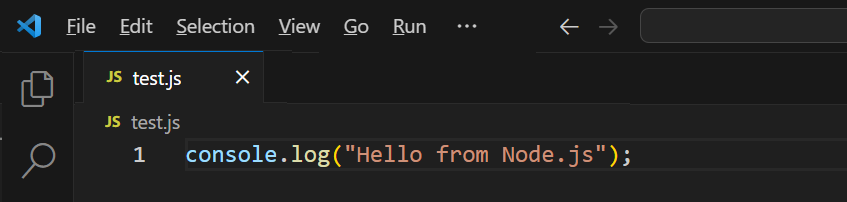
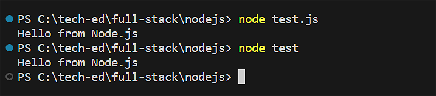
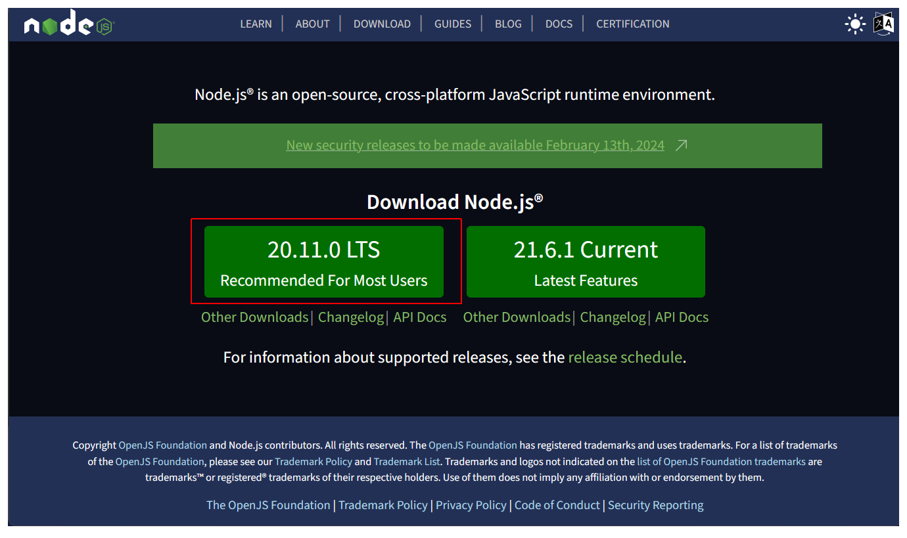
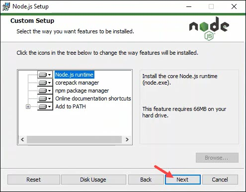
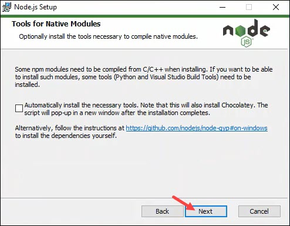
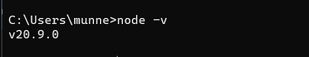
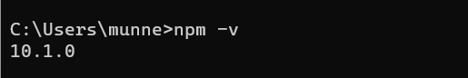
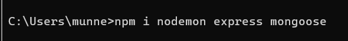
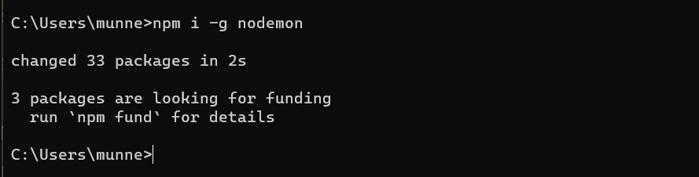

Learning Goals
At the end of this Tutorial, you will be able to:
- Install Node.js and the Node Package Manager (npm) on your local machine.
About Node.js: full-stack JavaScript
Node.js enables you run JavaScript code directly on your machine. No web browser needed. For example, create the simple text file below and name it test.js.
In a terminal, enter the following to run the file:
node test.js
Or, simply:
node test
Your terminal should now display the following:
With Node.js, you can create full-stack (frontend, middleware, and backend) apps that can interact with databases using only one language – JavaScript.
Installing Node.js
Follow the steps below.
- Go to the Node.js website and download the latest Long Term Stable (LTS) version. 
- Download the appropriate installer for your machine. For Windows, this is the .msi installer file.
- Follow the Setup Wizard instructions.
- Select components to include or remove from the installation.  You typically will not want to change the defaults.
- Choose whether to install additional dependencies. Again, you typically will not want to change the defaults. 
- Click Install and then Finish.
To verify Node.js installed successfully, run the following in a Command prompt or VS Code Terminal:
node -v
Your terminal window should similar to the one below.
If you had VS Code open while installing Node.js, you will need to restart VS Code to access Node.js in a VS Code terminal.
About the Node.js Package Manager (npm)
The Node.js Package Manager (npm) is automatically installed with Node.js. To verify npm installed successfully, run the following in a Command prompt or VS Code Terminal:
npm -v
Your terminal window should similar to the one below.
The npmjs.com website is the world's largest software registry that currently contains over 800,000 code packages.
You use the npm command to download and install packages locally as follows:
npm install <package-name>
Or simply:
npm i <package-name>
With the npm command, you can install multiple packages on a single command. For example:
Except for widely used packages, such as nodemon, you will typically want to install packages only locally in your app folder. The syntax for a global install is as follows:
